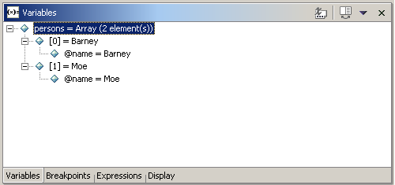
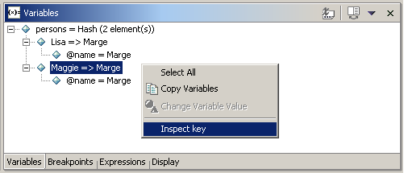
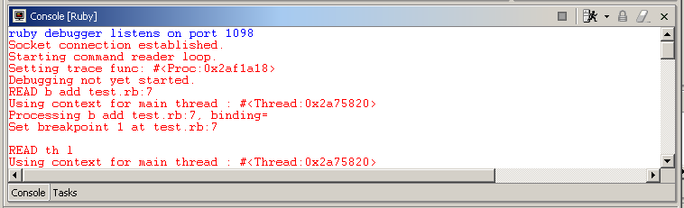

Prerequisites
If you can debug your ruby application depends on the version of the
ruby interpreter you are using:
- windows. Only 1.6.8 (mswin32) works. 1.6.7 (mswin32) is
not sufficient. 1.8.0 is not yet supported. Other distributions than
mswin32 have not been tested.
- linux.1.6.7 and 1.6.8 have been tested and work. 1.8.0 is
not yet supported.
Debugging your Application
- Open your ruby file and set a breakpoint like you would set a
breakpoint in a java file
- Select Run > Debug As > Ruby Application. The Debug
perspective will open:

- In the launch view use step into, step over, step return
to step through the code. Use the resume
button to resume the application.
- In the variable view:
- Press Show Type Names to show the type of each variable
- Check Show Constants
to display constants, check Show Class
Variables to display class variables
In the screenshot above the java debug actions are disabled, so that
only the ruby debug commands Show Constants and Show Class
Variables appear. If you want to disable/enable either ruby or java
debug actions, go toWindow > Preferences > Debug > Debug
Action Groups and select the appropriate debug actions.
Variable View
The variable view shows instance variables, class variables and
constants of objects. Arrays and hashes are handeled specially.
Arrays
Assume the following code:
class Person
def initialize(name)
@name = name
end
def to_s()
return @name.to_s
end
end
persons = []
persons << Person.new('Barney')
persons << Person.new('Moe')
After the last assignment the variable view shows the content of the
array:

Hashes
In order to show how hashes are presented in the variables view, a hash
is created:
persons = Hash[ Person.new('Lisa') => Person.new('Marge'),
Person.new('Maggie') => Person.new('Marge')]
The view shows the name of the hash with the number of elements in the
first place. If you expand the item, there will be a line for every
key/value pair in the hash. Expanding a key/value pair will show the
content of the value. If you want to know more about the key, select
"Inspect key" from the context menu:

Breakpoints View
Expression View
Results of ruby expression evaluation are displayed here. Evaluation
takes place:
- If you select text in the editor and run "Inspect" from the
context menu
- If you use the display view to enter ruby expressions
- If you select "inspect key" in the context menu of a hash value
in the variable view
Display View
Enter your text in the display view and run "Ruby inspect" from the
context menu. The expression view will open and show the result of the
expression. The expression is evalutated in the context of the selected
stack frame in the launch view.
Known limitations
The ruby debugger is still under development and there are some
limitations, which must be considered when debugging your application:
- In order to get the debug information about the running program,
eclipse starts a ruby debugger before the execution of your
application and talks to that ruby debugger via socket. Currently this
socket is set to 1098 and if this socket is bound already
debugging is not possible. (The java debugger searches for a free
socket before; that behaviour should be implemented for the ruby
debugger as well)
- threads are not refreshed regularly, i.e. you do not see the
threads your application creates before a breakpoint (or exception
or end of step) is reached
- Only one ruby program can be debugged concurrently (there is a
socket bind exception if you try to debug more than on ruby program
at the same time)
- breakpoints are not saved when eclipse is closed
Writing Bug Reports
In order to provide useful information in case of errors, you should
turn on verbose mode for the ruby debugger:
- open file
ECLIPSE_HOME/plugins/org.rubypeople.rdt.launching/ruby/eclipseDebug.rb
- set ECLIPSE_VERBOSE = true
- save file
- After you started debugging, the console shows additional
information (appears red, if stderr is printed red): 
- go to http://sourceforge.net/projects/rubyeclipse
and add the console input to your bug report.